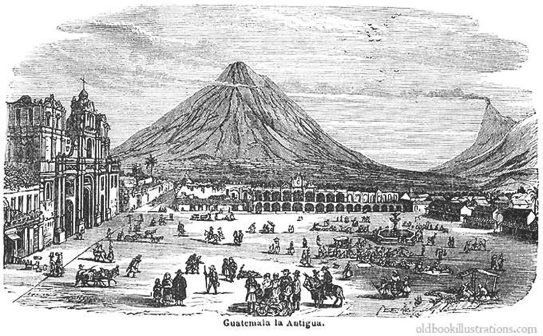
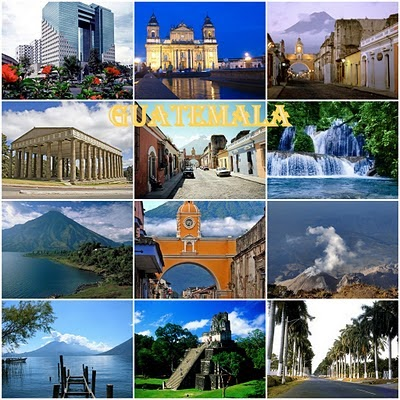
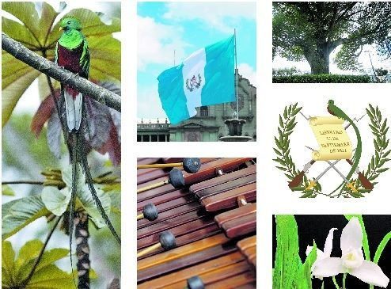

GUATEMALA
Historia y extensión territorial
Guatemala —oficialmente, República de Guatemala es un estado soberano situado en América Central, en su extremo noroccidental, con una amplia cultura autóctona producto de la herencia maya y la influencia castellana durante la época colonial, Guatemala tiene una extensión territorial de 108.889 km2.
Departamentos

| 1.Alta Verapaz | 2.Baja Verapaz | 3.Chimaltenango |
| 4.Chiquimula | 5.Petén | 6.El Progreso |
| 7.Quiché | 8.Escuintla | 9.Guatemala |
| 10.Huehuetenango | 11.Izabal | 12.Jalapa |
| 13.Jutiapa | 14.Quetzaltenango | 15. Retalhuleu |
| 16.Sacatepéquez | 17.San Marcos | 18. Santa Rosa |
| 19.Sololá | 20.Suchitepéquez | 21. Totonicapán |
| 22.Zacapa |
Lugares turísticos
1.Antigua Guatemala
2.Semuc Champey
3.Ciudad de Guatemala
5.Zona Arqueológica Tikal
6.Lago de Atitlán
7.Parque de Atracciones Xetulul
8. Parque Arqueológico Tazumal
Simbolos patrio
1. Bandera nacional
2. Escudo nacional
3. El Quetzal ave nacional
4. Monja Blanca flor nacional
5. El La Ceiba arbol nacional
6. La Marimba
7. Escudo de armas